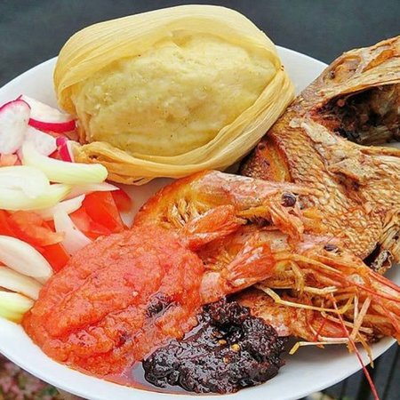

Kenkey Recipe

About the Ghanaian Kenkey
Kenkey is a Ghanaian dish made from fermented corn dough. It is a popular dish in Ghana and is enjoyed by many people.
Kenkey is usually served with fried fish and a spicy pepper sauce. It is a delicious and filling meal that is perfect for lunch or dinner.
Ingredients
- 2 cups of corn dough
- 1 teaspoon of salt
- 1 teaspoon of sugar
- 1 teaspoon of baking soda
- 1 teaspoon of vegetable oil
Instructions
- Place the corn dough in a large bowl and add the salt, sugar, baking soda, and vegetable oil.
- Add enough water to the corn dough to form a thick paste.
- Cover the bowl with a clean cloth and let the corn dough ferment for 2-3 days, or until it has a sour taste.
- After the corn dough has fermented, place it in a large pot and add enough water to cover the dough.
- Bring the water to a boil and then reduce the heat to low.
- Cover the pot and let the kenkey cook for about 1 hour, or until it is firm and cooked through.
- Remove the kenkey from the pot and let it cool before serving.
- Serve the kenkey with fried fish and a spicy pepper sauce.
Back